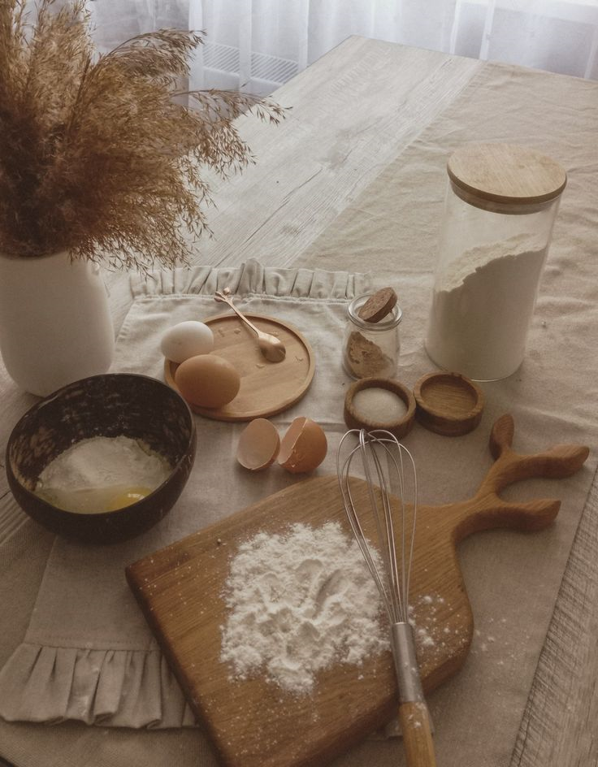

Our Story
Hi, my name Lisa Oluchi, a 20-year-old baking enthusiast from Port Elizabeth, Eastern Cape, South Africa. My baking journey started in grade 9 when I opened a little business at school. My muffins, the first thing I ever made, quickly became my signature treat. Growing up in a supportive community, my neighbor taught me to bake after my first batch burned, thanks to my grandpa’s request. From there, my love for baking blossomed. This blog is my way of sharing that passion with you, offering delightful recipes to bring joy to your kitchen. And so we welcome you to Come and Bake, our blog began in 2019, driven by a deep passion for baking and the joy it brings. Baking is our way of creating something from scratch with love, putting smiles on people’s faces. We believe that food and the hands that prepare it are deeply connected, carrying warmth and care. At Come and Bake, we offer seasonal baking recipes that you can try and make your own. We encourage you to express yourself through baking, sharing emotions and creating heartfelt moments.
